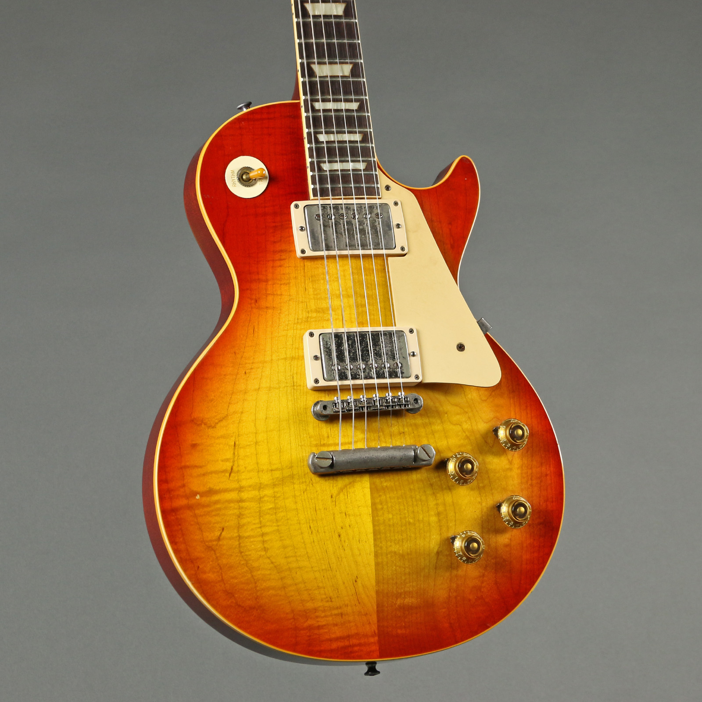

The History of the Gibson Les Paul
The 'Gibson Les Paul' electric guitar is argubely one of the most well known musical instruments known to humankind. It's origins begin with the man himself; Lester Polsfuss, 'Les Paul'. Les was an American showbusiness actor who worked on tv with his wife 'Mary Ford' as a performing guitar duet. Les was known to experiment with musical devices at 'Epi Stathopoulus' (Epiphone) workshop. It was in Epi's workshop where he created the first ever solid body electric guitar dubbed 'The Log', in 1940. 10 years later, Les was finally accepted by the 'Gibson Guitar Corporation' to manufacture his creation, after 'Fender' released their first electric guitar in 1950. The Gibson Les Paul guitar, made its official debut in 1952, featuring dual 'P90' pickups & a Gold Top body. To this day, the Les Paul remains the most popular guitar choice for any player of any genre of music. This popularity stems from the incredible design that has not changed since the beginning. The quality, sustain, playability, tone, and killer body shape of any Les Paul guitar is simply untouchable. The Gibson Les Paul guitar is the axe of choice of many famous guitar players such as: Slash (Guns N' Roses), Jimmy Page (Led Zeppelin), Billy Gibbons (ZZ Top), Randy Rhoads (Ozzy Osbourne), Ace Frehley (KISS), Neal Schon (Journey), Jerry Cantrell (Alice in Chains), & many more.
Facts About the Gibson Les Paul
- Gibson created the 'Les Paul Custom' in 1954 featuring custom prestige specs such as: a jet black body, gold hardware, five-piece diamond headstock pattern & a custom ABR-1 bridge.
- An original '1959 Gibson Les Paul Standard', is known to be the 'Ferrari GTO' of electric guitars. A '59 LP is incredibly rare, since only a handful were manufactured in that year. The retail price as of February 2022 sells for a whopping $497,054 CAD!
- Les Paul himself, was responsible for the idea/concept of the 'Epiphone Les Paul'; a lower end alternative Les Paul model, after Gibson purchased Epiphone in 1957- 7 years after the Gibson Les Paul was created.
- The 'Gibson SG' model originally started as a 'new' Les Paul re-design after discontuning the original Les Paul model in 1960. McCarty of Gibson wanted to create a light-weight, modern alternative to make up for the heavy-weight old-school look of the original Les Paul. The 'new' Les Paul was released in 1961 & featured 4 double-cut slim body models with a vibrato arm. Rumor has it that Les Paul himself saw the new design and hated it, later asking for his name be removed from the 'new' Les Paul headstock. Gibson changed the 'new' Les Paul to the 'Gibson SG' in 1963.